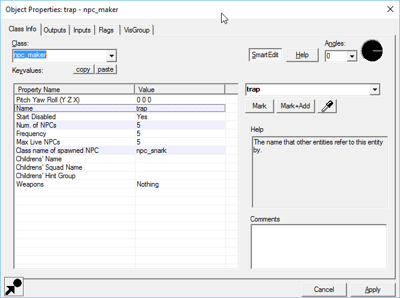
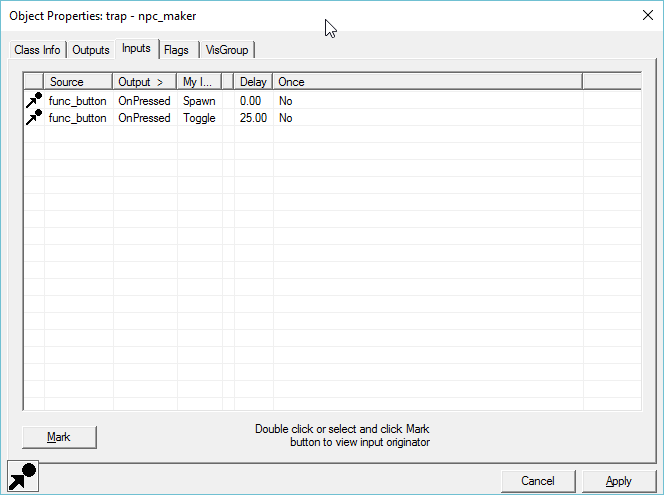

Is it possible to spawn snarks by pressing a button in multiplayer and the snarks attack whoever is in the room? Would this be a monster_generic with snark or headcrab as the model?
Thanks!

Is it possible to spawn snarks by pressing a button in multiplayer and the snarks attack whoever is in the room? Would this be a monster_generic with snark or headcrab as the model?
Thanks!
You should check out the workings of the snark launcher in bm_c2a4d (in the mapsrc/singleplayer folder). I haven’t looked into this in detail myself, but you would probably want an npc_maker entity with the button sending it the Spawn input and the Snark NPC entity configured to spawn. The big problem I see with this basic solution is that the snarks will not have any forward velocity and will just drop, but you could fire some kind of physics entity right behind them immediately after they spawn to launch them horizontally.
monster_generic doesn’t have the capability to attack players, or, well, much AI to speak of.
The entity you want to spawn is npc_snark.
thanks. I will give that a try
I can’t seem to get them spawning in multiplayer. I might be overlooking something simple.
Have you looked into the documentation of the NPC_Maker ent and its use in other levels? It’s fairly complicated.
not sure of the specifics on how to do this off the top of my head, but a workaround is if you can somehow destroy snark mines that you can place, they’ll attack nearby players.
Look at my map dm_winterhill there i just made func_fish_pool ther and choose snarks model also make a trigger_hurt
I am VERY happy to see that someone has a use for that entity.
How do I get a hold of that map?
The purpose of spawning the snarks is for a trap. When players enter a certain portion of the map a button can be pushed from behind in a secret room and that will spawn the snarks to attack them. Does the func_fish_pool have a way to do that?
Thanks everyone!
You have inputs and outputs button so you push output on button and add the name of fishpool. There you must choose on damage/activating button , name of enti is your name of fishpool (you must add name for fishpool) and via this inputs -enable and after you must add new one but with disable but over time that you want to operate a trap
Also sorry for my English[attach=4506,none,1280][/attach]
Thanks! I will give this a try and update this post with my results. The snarks have to have the ability to respawn and I would rather not have them active at all times… just when the button activates them.
Do I have to add a targetname to the fishpool entity? Also, can you make them invisible and then appear? They are in the map by default or without trigger. Also, I need them to attack players. IS that possible?
Unfortunately this entity will not be suitable to my purpose. I really need an entity that can be targeted to spawn something that will attack players in a multiplayer game. the fishpool entity will be useful for other projects but not this one.
Thank you for your help!
You can find more information on the npc_maker entity on the Source Developer Wiki. I really think that’s what you want.
Thanks, I will do that
npc maker entity spawns my snarks when the button is activated but they can’t be spawned again. Probably something I am overlooking.
How do you have it set up? Are you using the frequency-based spawning, or the Spawn input?
I have frequency set to 5. I have it set to spawn when button pressed and then have it set to toggle to reset it


Founded in 2004, Leakfree.org became one of the first online communities dedicated to Valve’s Source engine development. It is more famously known for the formation of Black Mesa: Source under the 'Leakfree Modification Team' handle in September 2004.